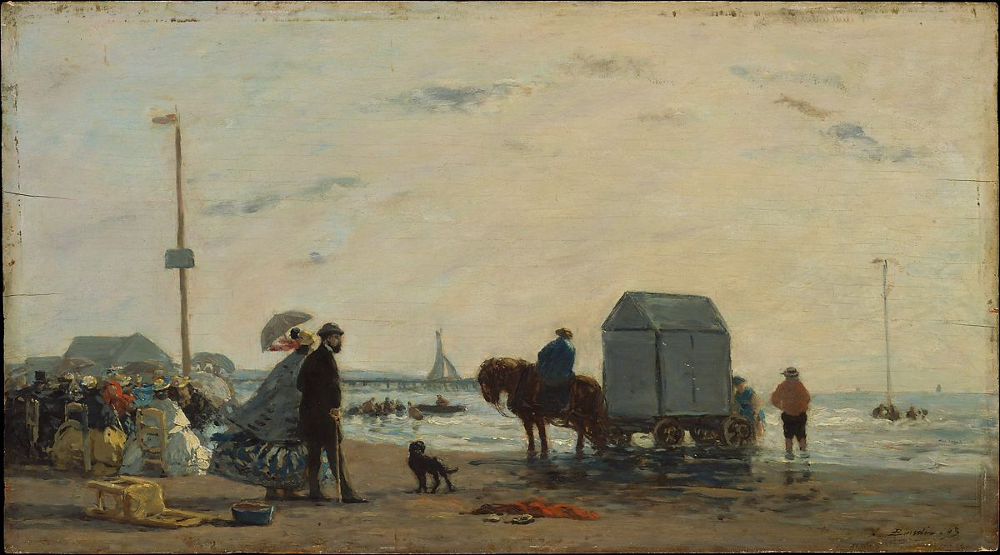

<head>
<meta charset="UTF-8" />
<meta name="keywords" content="drawing, painting" />
<meta name="description" content="drawings by Sunjy" />
<title>Sunjy</title>
<link rel="shortcut icon" type="image/x-icon" href="../../mImages/mCommon/favicon.ico" media="screen" />
<link rel="stylesheet" type="text/css" href="../../mCsses/mCommon/mCssA.css" />
<link rel="stylesheet" type="text/css" href="../../mCsses/mCommon/mCssB.css" />
<link rel="stylesheet" type="text/css" href="../../mCsses/mCommon/mCssC.css" />
<link rel="stylesheet" type="text/css" href="../../mCsses/mCommon/mCssD.css" />
<link rel="stylesheet" type="text/css" href="../../mCsses/mContent/mCssA.css" />
<link rel="stylesheet" type="text/css" href="../../mCsses/mContent/mCssB.css" />
<link rel="stylesheet" type="text/css" href="../../mCsses/mContent/mCssC.css" />
<link rel="stylesheet" type="text/css" href="../../mCsses/mContent/mCssD.css" />
</head>
<script type="text/javascript" src="../../mScripts/mContent/mContentAA.js" /></script>
<script type="text/javascript" src="../../mScripts/mContent/mContentAB.js" /></script>
<script type="text/javascript" src="../../mScripts/mContent/mContentAC.js" /></script>
<script type="text/javascript" src="../../mScripts/mContent/mContentAD.js" /></script>
<script type="text/javascript"></script> 
<script type="text/javascript">
document.write('<div class="mImgAbsolute"></div>');
/*
document.write('<p class="mFontSizeBColor" />From a white paper...</p>');
document.write('<table class="center"><tr><td>');
document.write('');
document.write('</td></tr></table>');
*/
</script>


<script type="text/javascript">
document.write('<p class="mFontSizeBColor" />On the Beach at Trouville</p>');
document.write('<p class="mFontSizeSColor" />By Eugene Boudin, 1863. Boudin, a native of Honfleur, began painting scenes of fashionable beach resorts along the Normandy coast in the early 1860s. In a letter of 1863, the year in which this view of the beach at Trouville was painted, the artist acknowledged the popularity of his paintings of &#34;little ladies on the beach,&#34; adding that &#34;some people say that in them there lies a vein of gold to be exploited.&#34;<br><br>On the Beach at Trouville reflects Boudin&#39;s interest in capturing the effects of light and atmosphere, from the flag and the crinoline fluttering in the stiff breeze to the cool gray light of the overcast sky. Painted in his studio, the work was likely based on studies made on-site. The artist often annotated such studies with the date, time of day, and wind conditions.</p>');
document.write('<table class="center" /><tr><td>');
document.write('<br>On the Beach at Trouville reflects Boudin&#39;s interest in capturing the effects of light and atmosphere, from the flag and the crinoline fluttering in the stiff breeze to the cool gray light of the overcast sky. Painted in his studio, the work was likely based on studies made on-site. The artist often annotated such studies with the date, time of day, and wind conditions." />');
document.write('</td></tr></table>');
</script>


